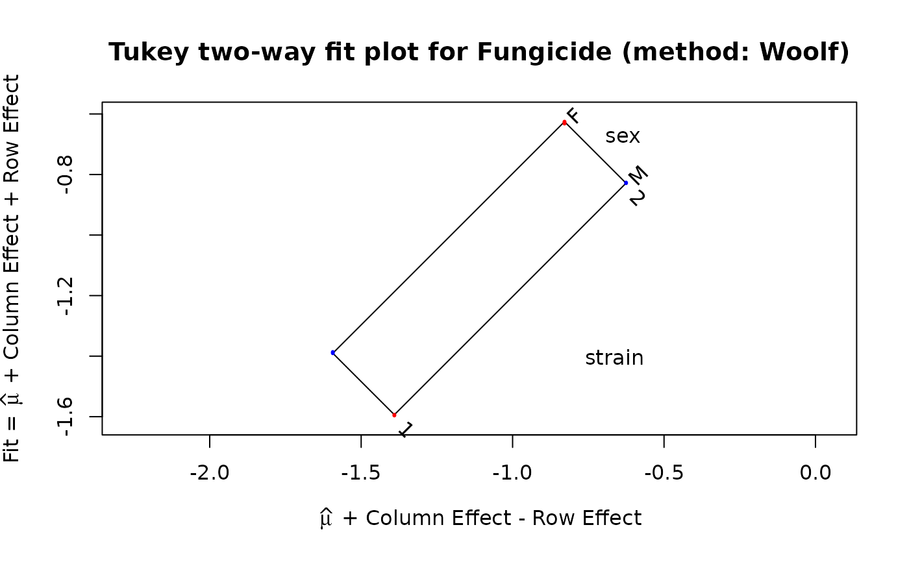
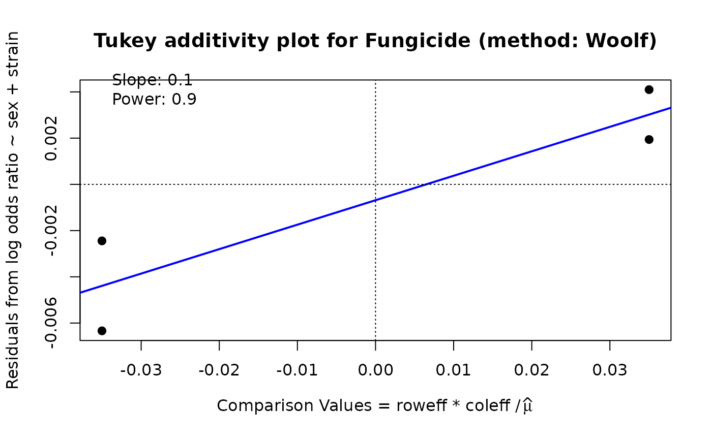

For a \(2 \times 2 \times R \times C\) table, computes an
additive row + column decomposition of the stratum log odds ratios tested
by woolf_test(), following Tukey's two-way ("median polish"-style) fit
as implemented in the twoway package.
Usage
woolf_twoway(
x,
weighted = TRUE,
name = deparse(substitute(x)),
responseName = "log odds ratio",
varNames = NULL
)Arguments
- x
A \(2 \times 2 \times R \times C\) array, as used by
woolf_test().- weighted
Logical. If
TRUE(the default), fit by weighted least squares using Woolf inverse-variance weights. IfFALSE, fit an ordinary (unweighted) Tukey mean-polish viatwoway::twoway().- name
A label for the data, used in the
print/plottitles. Defaults to the deparsed expression passed asx.- responseName
Label for the response (log odds ratio) axis.
- varNames
Character vector of length 2 giving row/column variable names. Defaults to the strata variable names from
x's dimnames.
Value
An object of class "twoway" (see twoway::twoway()), with
components overall, roweff, coleff, residuals, name,
rownames, colnames, method, responseName, varNames,
compValue, slope, and power. The weighted fit additionally
includes weights (the Woolf weights used) and fit (the underlying
lm object).
Details
Unlike twoway::twoway(),
which weights every stratum equally, woolf_twoway() weights each
stratum's log odds ratio by its inverse variance (the Woolf weight), so
that strata with more precise log odds ratios contribute more to the
fitted row and column effects.
twoway::twoway() has no weight argument, so the additive model
\(y_{ij} = \mu + \alpha_i + \beta_j + \epsilon_{ij}\) is instead fit
directly by weighted least squares (stats::lm() with weights = w and
sum-to-zero contrasts), where \(y_{ij}\) is the log odds ratio and
\(w_{ij}\) its inverse variance in stratum \((i,j)\), exactly as used
internally by woolf_test(). The resulting fit is repackaged as an
object of class "twoway", so that print.twoway() and plot.twoway()
from twoway (which = "fit" or "diagnose") work on it unchanged.
Set weighted = FALSE to instead get the ordinary (unweighted) Tukey
mean-polish fit, via twoway::twoway() directly, for comparison.
This is a purely descriptive decomposition: it does not attempt to
partition the woolf_test() homogeneity statistic itself (see
issues/woolf.md for why a naive row/column/residual split of that
statistic is not generally valid). It is intended for visualizing how the
log odds ratio varies additively (or not) across the row and column
stratifying variables.
See also
woolf_test(), twoway::twoway(), twoway::plot.twoway()
Other association tests:
CMHtest(),
GKgamma(),
HLtest(),
breslow_day_test(),
woolf_test(),
zero.test()
Examples
if (requireNamespace("twoway", quietly = TRUE)) {
data(Fungicide, package = "vcdExtra")
tw <- woolf_twoway(Fungicide)
print(tw)
plot(tw, which = "fit")
plot(tw, which = "diagnose")
# compare with the unweighted (plain mean-polish) decomposition
tw0 <- woolf_twoway(Fungicide, weighted = FALSE)
rbind(mean = tw0$roweff, Woolf = tw$roweff)
rbind(mean = tw0$coleff, Woolf = tw$coleff)
}
#>
#> Initial data (Dataset: "Fungicide"; Response: log odds ratio)
#> Residuals bordered by row effects, column effects, and overall
#>
#> strain
#> sex 1 2 roweff
#> + ---------- ---------- + ----------
#> M | -0.0024449 0.0019400 : -0.1015887
#> F | 0.0040983 -0.0063370 : 0.1015887
#> + .......... .......... + ..........
#> coleff | -0.3824757 0.3824757 : -1.1095056
#>


#> Slope of Residual on comparison value: 0.1
#> Suggested power transformation: 0.9
#> Ladder of powers transformation: no transformation
#> 1 2
#> mean -0.3809631 0.3809631
#> Woolf -0.3824757 0.3824757